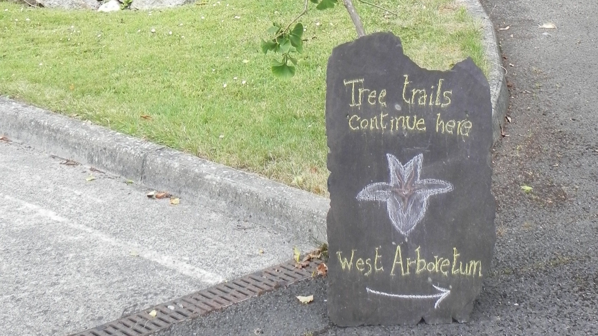

Sensory Trail of the Trinity College Botanic Garden
Trinity College Botanic Garden, located in Dartry, Dublin, D06W226 is a teaching and research facility for the Trinity College Botany Department. It is home to a living collection of approximately 4,000 species, and also houses the Irish Threatened Plant Seed Bank. The majority of the gardens are outside with the only indoor areas being inside the glasshouses so wear something warm or bring a jacket on colder days. Please note that most of the surfaces are a mixture of gravel and grass and may be more difficult to traverse for visitors with limited mobility. We are currently working to make the gardens and glasshouses easily accessible to everyone.
The garden’s origins date back over 330 years to its inception in 1687 as a physic garden for the teaching of medicine at Trinity College. Since then it has changed location twice, and has been here in Dartry, Dublin 6 since 1967. Today, the garden serves as a teaching and research facility for the Trinity College Botany Department. It is home to a living collection of approximately 4000 species, and also houses the Irish Threatened Plant Seedbank.
Sensory Trail
The Trinity College Botanic Garden Sensory Trail was the idea of Heather McLean. Her internship was sponsored by the Trinity Disability Service in a new and exciting collaboration between Trinity Botanic Garden and Trinity Disability Service to create a special sensory map of the gardens as part of the TCD Sense - The Trinity Sensory Processing Project. Heather has just completed her Botany degree at Trinity.
General Information for the main TCD Sense Map
Sensory Stops
Click on the each of the images to get a full description of the Sensory Stops. Be mindful that some of the sensory stops are seasonal, and will be updated from time to time.
Sensory Stop 1 - Lavender

Sensory Stop 2 - Bees

Sensory Stop 3 - Ancient Plants

Sensory Stop 4 - Local & Exotic Plants

Sensory Stop 5 - Aloe Vera

Sensory Stop 6 - Teas & Trees

Sensory Stop 7 - Fiddleheads on Ferns

Sensory Stop 8 - Catnip

Sensory Stop 9 - Wintersweeet

Sensory Stop 10 - Witch Hazel

Sensory Stop 11 - Frost on Grass

Sensory Stop 12 - Summer Storms

Sensory Stop 13 - Tree Canopies

Sensory Stop 14 - Wild Garlic

Sensory Stop 15 - Fruit Trees

Sensory Stop 16 - Baby's Tears

Sensory Stop 17 - Snowdrops

Sensory Stop 18 - Leaf Colour Changes

Sensory Trail Map
This map shows the Sensory Trail Stops for Trinity College Botanic Garden. Click on the flower markers to get a description of the Sensory Stops, as well as an audio description.
Way Finder Video
This is a Way Finder Video showing the walk from Cowper Luas Stop to Trinity College Botanic Garden. [Replace current video with final way finder video]